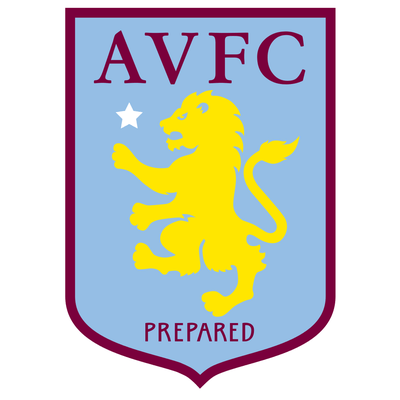

Premier League
The top level of the English football league system. Contested by 20 clubs:
 |
Manchester United Football Club, commonly referred to as Man United, is a professional football club based in the Old Trafford area of Manchester, England. The club competes in the Premier League. Nicknamed the Red Devils, Manchester United have won a record 20 League titles. |
 |
Liverpool Football Club is a professional football club based in Liverpool, England. The club competes in the Premier League. Founded in 1892, the club joined the Football League the following year and has played its home games at Anfield since its formation. The club has won nineteen League titles. |
 |
Arsenal Football Club (also simply known as Arsenal) is a professional football club based in Islington, London, England. Arsenal plays in the Premier League, the top flight of English football. The club has won 13 league titles (including one unbeaten title). |
 |
Chelsea Football Club is an English professional football club based in Fulham, in the western part of London. Founded in 1905, they play their home games at Stamford Bridge. The club has won six league titles. |
 |
Manchester City Football Club is an English football club based in Manchester that competes in the Premier League. The club's home ground is the Etihad Stadium in east Manchester. Having won eight League titles. |
|  | Aston Villa Football Club is a professional football club based in Aston, Birmingham, England. The club competes in the Premier League, the top tier of the English football league system. Founded in 1874, they have played at their home ground, Villa Park, since 1897. Aston Villa are one of the oldest and most successful clubs in England. |